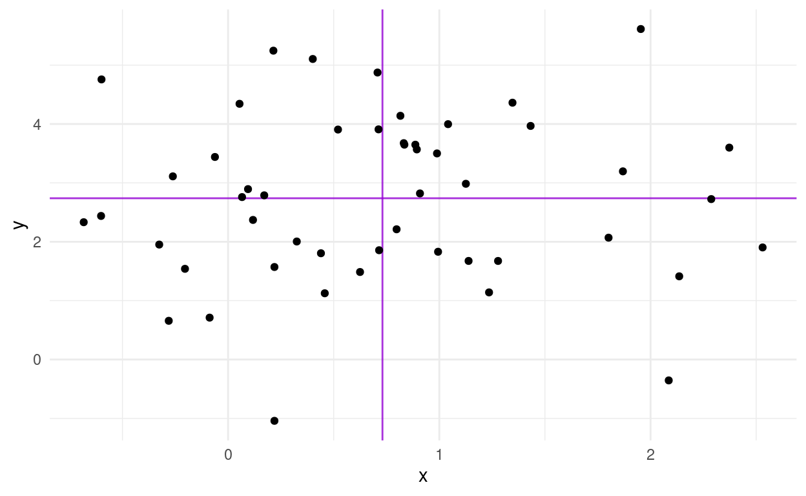

Video
Watch today’s video here:
Slides
Hover over the slides and press f for full screen. Press ? for a list of keyboard shortcuts.
Script
Data Considerations
1943
1943. The second World War is well underway, ravaging large parts of Europe. Military aircraft that had first entered the stage in World War I are now reaching their peak importance as they rain fire from the skies. But the Allied forces are facing a problem. As warplanes get better, so do anti-aircraft systems. In an effort to improve the survival of their fleet, the US military starts examining the planes returning from skirmishes with the opposing forces. They characterize the pattern of bullet holes in the metal hull, meticulously noting down each hit that the plane sustained. The resulting picture is better summarized in the modern, redrawn version in figure 1. We will look at it in just a second, but before we do, let me preface this one by stressing the reach of what we will find.
The effect in question has an invisible hand in the laboratory results you create, in the advice people give and is the reason why you don’t get rich after reading books by people telling you how to get rich. It is the pervasive mechanism that powerful people often don’t want to admit exists.

Figure 1: Figure from Wikipedia (“Survivorship Bias†2020).
After taking a look at the data they gathered, the military is ready to rush into action. To improve the endurance of their aircraft, the plan is to reinforce the parts of the plane that were most often hit by bullets. With stronger wings and a sturdier body of the plane, they think, surely more pilots will come back from their missions safely. They were wrong.
The Story of Abraham Wald
But the pilots where in luck. The military also consulted with the Statistics Research Group at Columbia University. A man named Abraham Wald worked there. In his now unclassified report “A method of estimating plane vulnerability based on damage of survivors,†he argued against the generals (Wald 1980). Instead of the most-hit parts of the planes, the least-hit parts are to be reinforced.

Instead of the most-hit parts, the least-hit parts are to be reinforced.
The reason for this seemingly counterintuitive result is what is now known as survivorship bias. The data that was collected contained only survivors, those planes that sustained damage not severe enough to hinder them from coming back after their mission. The aircraft that where hit in other places simply didn’t make it back. Consequently, Wald advised to reinforce the engines and the fuel tanks.
Thinking further
This is but one of a multitude of biases, specifically a selection bias, that will influence the quality of the inferences you can draw from available data. Keep in mind, data is not objective and never exists in a vacuum. There is always context to consider. The way the data was collected is just one of them. A lot of these ideas seem obvious in hindsight, which incidentally is another bias that social psychologists call hindsight bias, but they can sometimes be hard to spot.
A common saying is that music was better back in the days, or that all the old music still holds up while the new stuff on the radio just sounds the same. Well, not quite. This is also survivorship bias at work. All the bad and forgettable songs from the past just faded into oblivion, never to be mentioned again, while the songs people generally agreed to be good survived the ravages of time unscathed. A similar happens with success in general, not just songs. If you ask any CEO high up the corporate ladder, a millionaire or the author of a book that reads “How to get rich,†they are sure to have a witty anecdote about how their persistence or their brilliance or charisma got them to where they are now. What we are not seeing is all the people just as witty, just as charismatic or even just as persistent that where simply not as lucky. Very few people will tell you this. Because it takes a whole lot of courage to admit that ones success is based on luck and privilege.
And to take it back to the scientific context: When you are planning an experiment for the lab, always ask whether your data collection process can in some way be biased towards what you are trying to show.
I leave you with this:
weird how every time you see this image on twitter it has a ton of retweets pic.twitter.com/VALAKdeheP
— Jake VanderPlas (@jakevdp) December 8, 2020
And from this cautionary tale we jump straight back into RStudio.
Miscelaneous
To ease back into R programming, let’s look at some small but helpful things that might otherwise be missed on the sidelines.
Glue
First up is the glue package. Using paste to create a text in which the values of variables are inserted can be painful. The glue package makes it a breeze. Everything inside of curly braces in the text inside of the glue function will be evaluated as regular R code, enabling us to write text quite naturally:
I hope you are not too confused by the package and it’s main function having the same name.
value <- 0.04
glue("With a p-value of {value}!")
With a p-value of 0.04!Another thing I want to briefly mention was already hinted at, when I talked about graphics devices.
SVGs
Generally, there are those devices that produce pixel graphics where the information is stored as color values of the pixels. These are called raster devices. ragg, which I showed you last week, provides some of them. When you zoom into raster images, you can see the texts and shapes getting pixely or blurry. Another way to store information about graphs is to write a mathematical description of the lines and other shapes in the plot, which will then be interpreted by the program with which you open the vector graphic. Let me show you the most popular one called Scalable Vector Graphics (svg).
example <- ggplot(mtcars, aes(disp, mpg)) +
geom_point() +
labs(title = "Placeholder Title")
ggsave("plots/example.svg", example)
If you get Error in loadNamespace(name) : there is no package called ‘svglite’ you will have to install the mentioned package first.
You can now open the svg file with e.g. your browser to preview it. Some image display software will also preview it. Notice, how you can zoom in without loosing clarity. However, the more points and shapes your plot has, the more you computer will have to work to preview it and the file gets bigger than a comparable pixel graphics like png.
I am showing you svgs specifically, because it takes time to master all the intricacies of ggplot, for example to create annotation. And I don’t want to leave the impression that everything has to be done with pure R. Sure, from a reproducibility standpoint, being able to replicate all your plots and even the complete research report via Rmarkdown at the press of a button is great and should be the ultimate goal. But no one ever started out as an expert. And connecting with tools you already know is an important step.
So, for example, we could open up the svg file with the vector editor inkscape, which is also open source software, to add a different title and annotate some points.

But a word of Warning: When you do this, there is nothing from preventing you to also modify, move or scale the actual datapoints and other important parts that are vital to convey the correct information. So be extra careful when you do this.
Best Practices
Speaking of being careful. There is one rule I can give you to make your data analysis more secure:
Your raw data is sacred! Do not ever modify it or save over it.
This is even more important when, for example, using excel to preview a csv file. Under no circumstances should you hit the save button in excel when you are looking at the raw data. With approximately one-fifth of genomic research papers containing errors in the gene lists, because excel converted genes such as SEPT2 (Septin 2) into dates, you can see why (Ziemann, Eren, and El-Osta 2016). Biologists have since given up and renamed the genes that where commonly converted into dates… but the point still stands. This caution is of course also necessary when analyzing data with R, not just excel. When we read in the raw data and save a processed version, we create a new file, or even better, a new folder for it. A good convention for example would be do divide your data into a raw and derived folder.
Covariance, Correlation and Regression

Last week, we talked about a measure of the spread of a random variable called the variance.
\[var(X) = \frac{\sum_{i=0}^{n}{(x_i-\bar x)^2}}{(n-1)}\]
Today, we are extending this idea to 2 random variables. Because the normal distribution is so common, we are using two normally distributed variables. For the fun of it, they will have different means and standard deviations (remember: SD is the square-root of the variance).
N <- 50
df <- tibble(
x = rnorm(N, 1, 0.8),
y = rnorm(N, 3, 1.2)
)
m_x <- mean(df$x)
m_y <- mean(df$y)
ggplot(df, aes(x, y)) +
geom_vline(xintercept = m_x, alpha = 0.8, color = "darkviolet") +
geom_hline(yintercept = m_y, alpha = 0.8, color = "darkviolet") +
geom_point()

We also added lines for the means of the two random variables. Maybe I should have mentioned this more clearly earlier on, but the general convention in statistics is that random variables are uppercase and concrete values from the distribution have the same letter but lowercase.
We now get the covariance of X and Y as:
\[cov(X,Y)=\text{E}\left[(X-\text{E}\left[X\right])(Y-\text{E}\left[Y\right])\right]\]
The expected value \(E[X]\) is just a fancy way of saying the mean of X. If we asses the contribution of individual points towards the covariance, we can understand it quite intuitively. A point that has a higher x than the mean of X and a higher y than the mean of Y (top right quadrant) will push the covariance towards positive values. Likewise, a point in the bottom left quadrant will have negative differences with the X and Y mean, which cancel each other out to result in a positive covariance. The bottom right and top left quadrants push towards a negative covariance. A mix of positive and negative contributions will result in a covariance with a small absolute value.
The covariance has one problem: It will have weird units (X times Y) and the scale is different depending on the random variables. So what we do is standardize it by dividing by both standard deviations and get the correlation coefficient:
\[corr(X,Y)=\frac{cov(X,Y)}{\sigma_{X}\sigma_{Y}}\]
It can assume values between -1 and 1. It’s full name is Pearson product-moment correlation coefficient, or pearsons R. We can square it to get \(R^2\) (obviously), which indicates the strength of the correlation with values between 0 and 1 independent of the direction. We will meet it again later.
Let us apply our knowledge to a new dataset.
Introducing the Dataset
The dplyr package includes and example dataset of Star Wars characters. Unfortunately, it was created a while ago, so the is no baby yoda, but 87 other characters are present.

starwars
Let’s look at some correlations:
Pearson vs. Spearman (not a Boxing Match)
To compute pearsons correlation, we use the cor function in R. Instead of filtering out NA values beforehand, which would result in a correlation of NA, we can use use = "complete.obs" to ignore the NA is in the computation.
pearson <- cor(starwars$mass, starwars$height, use = "complete.obs")
pearson
[1] 0.1338842There is another way we can specify which features to correlate. corr also takes a matrix or data frame as it’s x argument instead of x and y:
mass height
mass 1.0000000 0.1338842
height 0.1338842 1.0000000This is known as a correlation matrix, and we can create it for more than two features, as long as all features are numeric (after all, what is the correlation between 1,4 and “cat†“dog?”). If you need this for your analysis, it will be handy to know how to convert this matrix to a tibble:
as_tibble(corr_matrix)
# A tibble: 2 x 2
mass height
<dbl> <dbl>
1 1 0.134
2 0.134 1 Looses the information about the rownames, because tibbles have no rownames. However, we can tell as_tibble to create a new column out of what previously where rownames.
as_tibble(corr_matrix, rownames = "feature1")
# A tibble: 2 x 3
feature1 mass height
<chr> <dbl> <dbl>
1 mass 1 0.134
2 height 0.134 1 Now we could even turn it into a tidy format to make a heatmap:
as_tibble(corr_matrix, rownames = "feature1") %>%
pivot_longer(-feature1, names_to = "feature2", values_to = "corr") %>%
ggplot(aes(feature1, feature2, fill = corr, label = corr)) +
geom_raster() +
geom_text(color = "white")
If you are working a log with correlations, it is certainly worth checking out the corrr package from the tidymodels framework: https://corrr.tidymodels.org/
Apart from cor, there is also cor.test, which gives more information.
cor_test <- cor.test(starwars$mass, starwars$height, use = "complete.obs")
cor_test
Pearson's product-moment correlation
data: starwars$mass and starwars$height
t = 1.02, df = 57, p-value = 0.312
alternative hypothesis: true correlation is not equal to 0
95 percent confidence interval:
-0.1265364 0.3770395
sample estimates:
cor
0.1338842 If we so fancy, we can use broom to turn the test output into a tidy format as well:
broom::tidy(cor_test)
When I first did this I was surprised that the correlation was so low. We are after all talking about height and mass, which I assumed to be highly correlated. Let us look at the data to see what is going on.
label_text <- glue("Pearson correlation: {round(pearson, 2)}")
jabba <- filter(starwars, str_detect(name, "Jabba"))
jabba_text <- list(x = 1100, y = 120)
starwars %>%
ggplot(aes(mass, height)) +
geom_point() +
annotate(geom = "text", x = 500, y = 75, label = label_text,
hjust = 0) +
annotate(geom = "curve",
x = jabba_text$x, y = jabba_text$y,
xend = jabba$mass, yend = jabba$height,
curvature = .3,
arrow = arrow(length = unit(2, "mm"))) +
annotate(geom = "text",
x = jabba_text$x,
y = jabba_text$y, label = "Jabba the Hutt",
hjust = 1.1) +
xlim(0, 1500) +
labs(x = "mass [kg]",
y = "height [cm]")
This is the culprit! We have a massive outlier, in all senses of the word “massive.†At this point it is fair to say, Jabba the Hutt could use some workout to loose weight. Luckily, there is another method to asses correlation. Spearman’s method is more resistant to outliers, because the data is transformed into ranks first, which negates the massive effect of outliers. Visually, this is what the points look like after rank transformation:
spearman <- cor(starwars$mass, starwars$height,
method = "spearman",
use = "complete.obs")
label_text <- glue("Spearman rank correlation: {round(spearman, 2)}")
starwars %>%
mutate(mass = rank(mass),
height = rank(height)) %>%
ggplot(aes(mass, height)) +
geom_point() +
annotate(geom = "text", x = 0, y = 75, label = label_text,
hjust = 0) +
labs(x = "rank(mass)",
y = "rank(height)")
Linear Regression
Finally, linear regression is a related concept, because both correlation and linear regression quantify the strength of a linear relationship. However, there are key differences. When we fit a linear model like y ~ a + b * x, there is no error in x. We assume x is something that is fixed, like the temperature we set for an experiment or the dosage we used. Y on the other hand is a random variable. In cov(X,Y) and cor(X,Y), X and Y are both random variables, usually things we observed, not set ourselves.
While the correlation coefficient is symmetrical and translation-scale-invariant, meaning \(corr(X,Y)=corr(Y,X)\) and \(corr(X,Y)=corr(X * a +b,Y * c + d)\), linear models are not!
In the data folder we find the IMDB ratings for 10 Star Wars movies (plus more features).
starwars_movies <- read_rds("data/starwars_movies.rds")
starwars_movies
# A tibble: 10 x 25
Title Rated Released Runtime Genre Director Writer Actors Plot
<chr> <chr> <date> <chr> <chr> <chr> <chr> <chr> <chr>
1 Star… PG 1977-05-25 121 min Acti… George … Georg… Mark … Luke…
2 Star… PG 1980-06-20 124 min Acti… Irvin K… Leigh… Mark … Afte…
3 Star… PG 1983-05-25 131 min Acti… Richard… Lawre… Mark … Afte…
4 Star… PG-13 2015-12-18 138 min Acti… J.J. Ab… Lawre… Harri… As a…
5 Star… PG 1999-05-19 136 min Acti… George … Georg… Liam … Two …
6 Star… PG-13 2005-05-19 140 min Acti… George … Georg… Ewan … Thre…
7 Star… PG 2002-05-16 142 min Acti… George … Georg… Ewan … Ten …
8 Star… PG-13 2017-12-15 152 min Acti… Rian Jo… Rian … Mark … Rey …
9 Rogu… PG-13 2016-12-16 133 min Acti… Gareth … Chris… Felic… The …
10 Star… PG-13 2019-12-20 141 min Acti… J.J. Ab… Chris… Carri… The …
# … with 16 more variables: Language <chr>, Country <chr>,
# Awards <chr>, Poster <chr>, Ratings <list>, Metascore <chr>,
# imdbRating <dbl>, imdbVotes <dbl>, imdbID <chr>, Type <chr>,
# DVD <date>, BoxOffice <chr>, Production <chr>, Website <chr>,
# Response <chr>, year <dbl>We can fit a linear model to see if the production year has an effect on the rating.
What I added here as gray segments are the so called residuals. They are what makes linear regression work. It’s full name is Ordinary Least Squares and the squares in question are the squares of these residuals, the word least indicates that these squares are minimized in order to find the best fit line.
I am yet to encounter Extraordinary Least Squares but I am sure someone in machine learning will soon need more words to fuel the hype and it will become a thing.
broom::tidy(model)
# A tibble: 2 x 5
term estimate std.error statistic p.value
<chr> <dbl> <dbl> <dbl> <dbl>
1 (Intercept) 74.7 28.9 2.59 0.0322
2 year -0.0335 0.0144 -2.33 0.0484Looks like every year decreases the estimated rating by 0.03.
One thing however is the same between correlation and linear regression, and that is the \(R^2\) value we get from both calculations:
summary(model)
Call:
lm(formula = imdbRating ~ year, data = starwars_movies)
Residuals:
Min 1Q Median 3Q Max
-1.1171 -0.2631 0.1152 0.3955 0.8195
Coefficients:
Estimate Std. Error t value Pr(>|t|)
(Intercept) 74.65951 28.85148 2.588 0.0322 *
year -0.03354 0.01442 -2.326 0.0484 *
---
Signif. codes: 0 '***' 0.001 '**' 0.01 '*' 0.05 '.' 0.1 ' ' 1
Residual standard error: 0.7006 on 8 degrees of freedom
Multiple R-squared: 0.4035, Adjusted R-squared: 0.329
F-statistic: 5.412 on 1 and 8 DF, p-value: 0.04843We can interpret \(R^2\) as the fraction of the variance of the response variable y that can be explained by the predictor x.
Non-linear Least Squares
So far, we only properly dealt with linear relationships and now it is time to get non-linear. We will be creating a mechanistically driven predictive model, so we have a formula of which we want to adjust the parameters so that it fits our data.
Let’s take classical Michaelis-Menten-Kinetics There is a dataset for enzyme reaction rates included in R. But we convert it from a dataframe to a tibble so that it prints nicer:
as_tibble(Puromycin)
# A tibble: 23 x 3
conc rate state
<dbl> <dbl> <fct>
1 0.02 76 treated
2 0.02 47 treated
3 0.06 97 treated
4 0.06 107 treated
5 0.11 123 treated
6 0.11 139 treated
7 0.22 159 treated
8 0.22 152 treated
9 0.56 191 treated
10 0.56 201 treated
# … with 13 more rowsThe initial rate \(v_0\) of the an enzymatic reaction was measured for a control and a sample treated with puromycin at different substrate concentrations. For every concentration we have two replicates except for one missing replicate. We can make this explicit so that we can keep track of the replicates:
puro <- as_tibble(Puromycin) %>%
group_by(conc, state) %>%
mutate(rep = 1:n()) %>%
ungroup()
Now we can plot the individual curves.
puro %>%
ggplot(aes(conc, rate,
group = paste(rep, state),
color = state)) +
geom_line() +
geom_point()
From our Biochemistry studies, we know that we can express the rate depending on the concentration with the following formula:
\[rate=\frac{(Vm * conc)}{(K + conc)}\]
To make it easier to work with, let’s turn it into a function:
rate <- function(conc, Vm, K) {
(Vm * conc) / (K + conc)
}
Let’s pick some arbitrary starting values. For example, we see that the maximal velocity could be around 200. We also know that K is the concentration at which the half-maximal velocity is reached.
puro %>%
ggplot(aes(conc, rate,
color = state)) +
geom_line(aes(group = paste(rep, state))) +
geom_point() +
geom_function(fun = ~ rate(conc = .x, Vm = 200, K = 0.2),
color = "black")
geom_function expects a function of x or an anonymous function where the first argument is the values on the x-axis, so this is what we did. Well, I bet we can do better than guessing the function! What R can do for us is the same it did for linear least squares and that is minimizing the distance of our curve to the datapoints. This is the job of the nls function, which stands for Nonlinear Least Squares.
model <- nls(rate ~ rate(conc, Vm, K),
data = puro,
subset = state == "treated",
start = list(K = 0.1, Vm = 200))
model
Nonlinear regression model
model: rate ~ rate(conc, Vm, K)
data: puro
K Vm
0.06412 212.68363
residual sum-of-squares: 1195
Number of iterations to convergence: 6
Achieved convergence tolerance: 6.108e-06NlS needs starting values, so we use any guess that isn’t too far off. If it is completely wrong, the model doesn’t know in which direction it should move the parameters to improve the fit and we get an error like this: Error in nls(rate ~ rate(conc, Vm, K), data = puro, subset = state == : singular gradient
For this special case, R also has a self-starting model. I won’t go into it because it is not as useful as the general concept of fitting arbitry functions, but you can check out
SSmicmenfor a model that estimes the starting values automatically.
Additionally, nls takes an argument subset, which works just like the dplyr verb filter so that we can fit the model on a subset of the data without having to create it beforehand.
There are now multiple ways of displaying our model. With broom::augments we can add the predictions to the original data (which is just the treated state):
broom::augment(model) %>%
ggplot(aes(conc, rate)) +
geom_point() +
geom_line(aes(y = .fitted))
But this has the obvious disadvantage of only adding a point (or a nick in the line) where we previously had datapoints. We have the parameters and the complete function, so we can calculate an arbitrary amount of values in between to make a smooth function.
broom::tidy(model)
# A tibble: 2 x 5
term estimate std.error statistic p.value
<chr> <dbl> <dbl> <dbl> <dbl>
1 K 0.0641 0.00828 7.74 1.57e- 5
2 Vm 213. 6.95 30.6 3.24e-11So we could pull the estimates of K and Vm out with broom and then use them in our function. Or, we make use of the predict function. It takes a model and some new data and generates the predicions. If we don’t give it new data, we just get predictions for the data that we used to fit the model.
predict(model)
[1] 50.56606 50.56606 102.81102 102.81102 134.36165 134.36165
[7] 164.68470 164.68470 190.83289 190.83289 200.96878 200.96878We can also use a combination of this and geom_function, which I think feel pretty natural once you are comfortable with writing functions on the fly.
Now, what if we want to fit the model for both states? We can resort back to our trusty purrr package like we did in an earlier lecture.
puro_models <- puro %>%
nest(-state) %>%
mutate(
model = map(data, ~ nls(rate ~ rate(conc, Vm, K), data = .x,
start = list(Vm = 200, K = 0.1))),
tidy = map(model, broom::tidy),
glance = map(model, broom::glance)
)
puro_models
# A tibble: 2 x 5
state data model tidy glance
<fct> <list> <list> <list> <list>
1 treated <tibble [12 × 3]> <nls> <tibble [2 × 5]> <tibble [1 × 9]>
2 untreated <tibble [11 × 3]> <nls> <tibble [2 × 5]> <tibble [1 × 9]>Now we can inspect the estimated parameters with ease:
puro_models %>%
unnest(tidy)
# A tibble: 4 x 9
state data model term estimate std.error statistic p.value glance
<fct> <lis> <lis> <chr> <dbl> <dbl> <dbl> <dbl> <list>
1 trea… <tib… <nls> Vm 213. 6.95 30.6 3.24e-11 <tibb…
2 trea… <tib… <nls> K 0.0641 0.00828 7.74 1.57e- 5 <tibb…
3 untr… <tib… <nls> Vm 160. 6.48 24.7 1.38e- 9 <tibb…
4 untr… <tib… <nls> K 0.0477 0.00778 6.13 1.73e- 4 <tibb…And check how the models performed. Unfortunately, I can’t get into these performance metrics because time is short.
puro_models %>%
unnest(glance)
# A tibble: 2 x 13
state data model tidy sigma isConv finTol logLik AIC BIC
<fct> <lis> <lis> <lis> <dbl> <lgl> <dbl> <dbl> <dbl> <dbl>
1 trea… <tib… <nls> <tib… 10.9 TRUE 6.09e-6 -44.6 95.3 96.7
2 untr… <tib… <nls> <tib… 9.77 TRUE 2.31e-6 -39.6 85.2 86.4
# … with 3 more variables: deviance <dbl>, df.residual <int>,
# nobs <int>Now, we could use the estimated parameters to or the models with predict to plot all (well, both) model fit lines over the original data, but there is an easier way. geom_smooth can take “nls†as a method as well, we just need to make sure to pass the correct arguments. And it can be confusing, because when we are specifying the formula in geom_smooth, it always needs to be a formula of y ~ x, whereas in the normal nls we did earlier, we specified the variables in terms of their actual names (rate and conc).
We also need se = FALSE, because by default R would try to plot a confidence interval around the fit-line like it did for the linear model, but nls doesn’t return one, so we would get an error.
The unfortunate thing about this method is that we end up fitting the model twice, once to get the estimated parameters and the likes for ourselves and a second time in ggplot to display the fitted lines. But in most cases this is not a problem, because the model is not very computationally expensive.
Exercises
The Datasaurus Dozen
The Datasaurus Dozen (Matejka and Fitzmaurice 2017) is a dataset crafted to illustrate certain concepts. It can be accessed from R via the datasauRus package.
datasauRus::datasaurus_dozen
- Explore the dataset before looking at the publication above (it contains spoilers…):
- It actually contains 13 different datasets, denoted by the column
dataset, in one tibble. What are the means for x and y for the different datasets? What are the standard deviations for x and y for the different datasets? What are the correlations coefficients for the different datasets? I bet you notice a pattern by now. - Now create one (or multiple) scatterplots of the data. What do you notice? what conclusions do you draw from this observation?
- It actually contains 13 different datasets, denoted by the column
There is another dataset in the package to illustrate a different point:
datasauRus::box_plots
- First, turn it into a tidy format, much like the
datasaurus_dozentibble. - Now, visualize the distributions of the values for the 5 different groups. Try out different versions of your plot until you are satisfied, but be sure to also include a boxplot and compare it to your approaches.
Preparing for the Christmas Special
- What datasets would you find interesting? Maybe you already have some data you collected or maybe just an idea (in the second case I might also do an episode on getting data from the internet via webscarping), or maybe there is a dataset in the tidytuesday repository that speaks to you: https://github.com/rfordatascience/tidytuesday